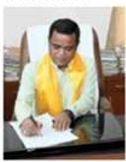

On Teachers Day, CM recollects years as one and shares pride at seeing former students grow into leaders
It is no secret that the ruling Congress in Karnataka is faction-ridden, with two main groups, respectively led by Chief Minister Siddaramaiah and Deputy CM plus Karnataka party president D K Shivakumar. After intermittent bouts of sparring since the party came to power in 2023, the hatchet was temporarily buried before the 2024 Lok Sabha polls.
But now that the polls are over, the factions are back taking swipes at one another. Supporters of Shivakumar – who has made no bones about coveting the CM seat – have rekindled his bid, pointing fingers at the party’s lower-than-expected performance in the Lok Sabha polls in the state.
Siddaramaiah’s coterie, in turn, is trying to pin the responsibility on Shivakumar,
besides trying to dilute his powers by re-raising the demand for three more Deputy CMs.
Despite the Congress improving its seat count in the state by eight, the Lok Sabha poll results were not up to its expectations. The results were particularly a setback for Shivakumar, whose younger brother D K Suresh lost from his home region — the Bengaluru Rural constituency – to a BJP-JD(S) coalition candidate, while the Congress itself failed to win more than one of
the 14 Lok Sabha seats in South Karnataka. Shivakumar has positioned himself as an alternative to former PM H D Deve Gowda and his son, ex-CM H D Kumaraswamy, as the leader of the dominant Vokkaliga community in the region.

It is no secret that the ruling Congress in Karnataka is faction-ridden, with two main groups, respectively led by Chief Minister Siddaramaiah and Deputy CM plus Karnataka party president D K Shivakumar. After intermittent bouts of sparring since the party came to power in 2023, the hatchet was temporarily buried before the 2024 Lok Sabha polls.
But now that the polls are over, the factions are back taking swipes at one another. Supporters of Shivakumar – who has made no bones about coveting the CM seat – have rekindled his bid, pointing fingers at the party’s lower-than-expected performance in the Lok Sabha polls in the state.
Siddaramaiah’s coterie, in turn, is trying to pin the responsibility on Shivakumar,
besides trying to dilute his powers by re-raising the demand for three more Deputy CMs.
Despite the Congress improving its seat count in the state by eight, the Lok Sabha poll results were not up to its expectations. The results were particularly a setback for Shivakumar, whose younger brother D K Suresh lost from his home region — the Bengaluru Rural constituency – to a BJP-JD(S) coalition candidate, while the Congress itself failed to win more than one of
the 14 Lok Sabha seats in South Karnataka. Shivakumar has positioned himself as an alternative to former PM H D Deve Gowda and his son, ex-CM H D Kumaraswamy, as the leader of the dominant Vokkaliga community in the region.
The BJP faces a stiff challenge in its bid to return to power in the state from a combative Kamal Nath-led Congress.
This will be Modi’s second visit to MP in just over a month, after his July 1 trip to Shahdol. BJP leaders said they are expecting
up to 2 lakh people to attend the PM’s rally and the temple ceremony.
The BJP faces a stiff challenge in its bid to return to power in the state from a combative Kamal Nath-led Congress.
This will be Modi’s second visit to MP in just over a month, after his July 1 trip to Shahdol. BJP leaders said they are expecting
up to 2 lakh people to attend the PM’s rally and the temple ceremony.
The BJP faces a stiff challenge in its bid to return to power in the state from a combative Kamal Nath-led Congress.
This will be Modi’s second visit to MP in just over a month, after his July 1 trip to Shahdol. BJP leaders said they are expecting
up to 2 lakh people to attend the PM’s rally and the temple ceremony.
The BJP faces a stiff challenge in its bid to return to power in the state from a combative Kamal Nath-led Congress.
This will be Modi’s second visit to MP in just over a month, after his July 1 trip to Shahdol. BJP leaders said they are expecting
up to 2 lakh people to attend the PM’s rally and the temple ceremony.
LB das takes charge as urban dev minister

Gangtok 05 sept (ipr):
In a landmark decision, the Prime Minister announced a sweeping set of reforms aimed at overhauling the national healthcare system. The new policy focuses on increasing accessibility, reducing costs, and improving the quality of care. The announcement was met with mixed reactions from various political factions. Supporters praised the initiative as a necessary step towards equitable healthcare, while critics argued that the plan lacks sufficient funding and detail.
The Prime Minister remains steadfast, emphasizing that the reforms will pave the way for a healthier and more inclusive society
contact
summit times
reporters
8170070813
mangan/dikchu/
9596569595/
596595999
gangtok
9800571148
5959595595
5848548484
659596599
Global Summit on Climate Change Concludes with Historic Agreement
The Global Summit on Climate Change concluded yesterday with an historic agreement aimed at tackling the pressing issue of global warming. Held in Geneva, Switzerland, the summit saw participation from over 150 countries, including leaders, scientists, and activists who gathered to discuss strategies and commitments to reduce carbon emissions and combat climate change.
The Global Summit on Climate Change concluded yesterday with an historic agreement aimed at tackling the pressing issue of global warming. Held in Geneva, Switzerland, the summit saw participation from over 150 countries, including leaders, scientists, and activists who gathered to discuss strategies and commitments to reduce carbon emissions and combat climate change.
hii
hii
hii
hii
hii


 Summit
Summit